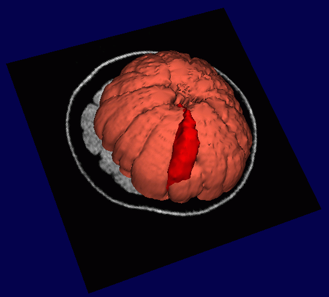

Slicer can be used to create many kinds of scenes, including:
- A single series of
grayscale images
- A complex scene comprised of several grayscale and
segmented data sets
- 3D models, such as the composite scene below of a
grayscale MR dataset of an orange, with a single
section of the orange highlighted (in red), and the rest of the orange displayed (in orange)

Selecting the View mode
To select the View mode:
- Click View. A drop-down menu of available view modes appears.
- Select a view mode from the menu. The view will change to reflect your selection.
Different View modes are useful for different situations.
Most users prefer the Normal (shown above) or 4D view for observing data after they are done editing
and creating a scene.
Users also prefer the 4x512 view during the editing process.
View modes include: